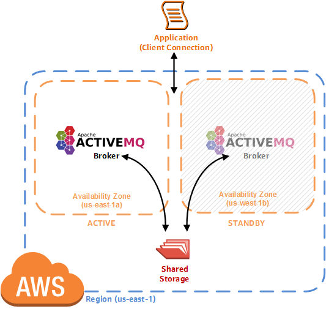
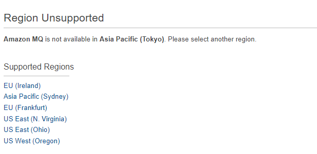
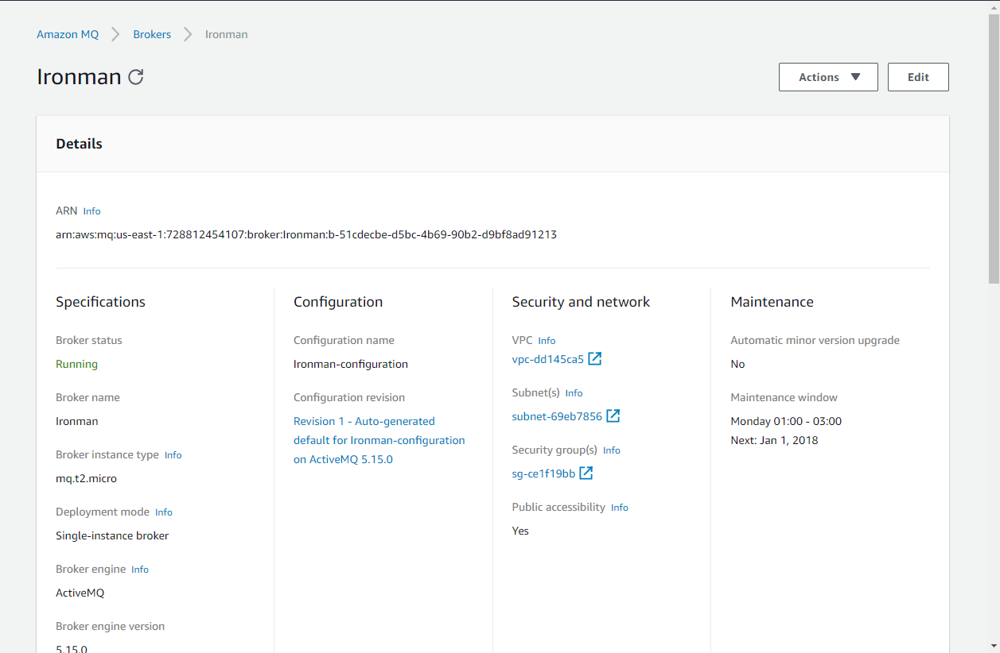
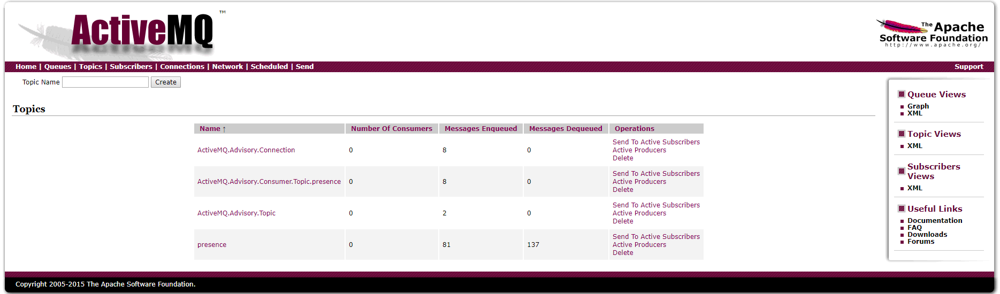

30天鐵人賽介紹 AWS 雲端世界 - 23: 適用於 Apache ActiveMQ 的訊息代理服務 MQ
What is MQ
AWS MQ 是 2017 AWS 所推出的一項重量級新服務，此服務主要是實作 Apache ActiveMQ 提供符合業界標準用於訊息的 API 及通訊協定。
先前介紹的 SQS 已經是一個非常成熟的訊息佇列服務，而不同於 MQ 的服務，當初在規劃 SQS 時因為 AWS 沒有需要參考業界標準的考量下設計了這套服務，也造成今天如果要使用 SQS 服務的系統需要沒有一個標準的通訊協定來參考，而是要按造 AWS 的規定做開發修改。

我們都知道要建置一個支援海量訊息的訊息服務是非常困難的，尤其有很多針對高可用度(High Availability)與耐久度(Durability)的設計與調整，甚至是要達到訊息安全(Security)都不是一件簡單的事情。而上述這些煩惱與困難我們都可以讓 MQ 很快速的幫我們完成，這就是為什麼 MQ 一推出來就造成大家的踴躍投入。
ActiveMQ是一種開源的，實現了JMS1.1規範的，面向消息(MOM)的中間件，為應用程序提供高效的、可擴展的、穩定的和安全的企業級消息通信。ActiveMQ使用Apache提供的授權，任何人都可以對其實現代碼進行修改。
除了支援的協定不同，與 SQS 服務不同的是主要針對當今企業建立一個訊息服務作為骨幹時所要達成的四點核心內容作強化:
- 運營開銷(operational overhead)
- 可靠性(reliability)
- 儲存容量規劃(capacity plan)
- 建置成本(cost)
目前 MQ 支援的格式如下:
JMS
Java 所提供的應用層標準訊息佇列協議
NMS
.NET 所提供的應用層標準訊息佇列協議
AMQP
一個提供統一消息服務的應用層標準訊息佇列協議,是應用層協議的一個開放標準,為面向消息的中間件設計。基於此協議的客戶端與消息中間件可傳遞消息，並不受客戶端/中間件不同產品，不同開發語言等條件的限制。
優點：可靠、通用
MQTT
優點: 優點：格式簡潔、佔用網路頻寬小、適合移動端通信、推播(PUSH)、嵌入式系統
STOMP
是一種為MOM(Message Oriented Middleware，面向消息的中間件)設計的簡單文本協議。 STOMP提供一個可互操作的連接格式，允許客戶端與任意STOMP消息代理（Broker）進行交互。
優點：命令模式（非topic\queue模式）
WebSocket
優點: 單純、簡單
而費用上 Free Tier 每月使用單可用Micro Instance 等級的實體(Instance)達 750 小時，並且每月可存儲 1 GB 的數據流量。
架構上也分為單一(single broker)模式與進階(Active-Standby)模式

接下來我們也會以 MQTT 為例示範如何使用 MQ 來幫我們傳送與接受訊息。
Hands on Lab
Create MQ Broker
首先先登入 [AWS Console] 後在中間的輸入框查詢 ActiveMQ ，或是透過左上角的 Services 點選到 Application Integration 下的 Amazon MQ 服務：
目前不是所有region都有提供 MQ 服務:

然後依序建立 Broker 的步驟(使用預設值)，這邊要稍微注意這邊會讓我們設定 ActiveMQ 的登入帳號，預設會帶入當前的 AWS 登入帳號，如果密碼長度不符合規定則無法建立:
完成後要等待一下待服務啟用成功:
之後就可以去將 Security Group 中的 Inbound Rule 添加指定指定 Port :

當加入 Port 後我們就可以成功訪問 ActiveMQ 了。
Implement node.js application to connect ActiveMQ
接著我們透過 nodejs 實際與 mqtt 連接使用。對於 MQTT 的使用有要更一步了解的請直接參考Awesome MQTT 整理的相關學習支援與框架列表。
這邊我們將用到 MQTT.js 這個套件，MQTT.js支援在命令行（終端機）中直接輸入命令，藉以發佈與接收 MQTT 主題。若要使用命令行模式，請用全域（global）方式安裝MQTT.js：
npm install mqtt -g
接著我們建立以下兩個檔案並將 AWS MQ 中的 MQTT 設定放入，更這邊注意官方給的 mqtt+ssl 需要改成 mqtts ，並且建立連線時填入 protocolId 設定為 MQIsdp與 protocolVersion 設定為 3 才可以成功建立連線:
subscriber.js
1 | var mqtt = require("mqtt"); |
上述檔案建立完後即可運行:
node subscriber.js
接者我們在另外一個檔案建立消費端:
publisher.js
1 | var mqtt = require("mqtt"); |
安裝修改好後，我們可以來運行測試一下發佈則訊息至 AWS MQ 上並啟用消費端的程式接收訊息，這邊要麻煩開兩個 CLI 執行:
node publisher.js
而過程中我們可以看到 AWS MQ 上面的 Topic 會有增減(因為被取出或是加入):

上述範例原始碼請至: AWS MQ sample code with nodejs參考